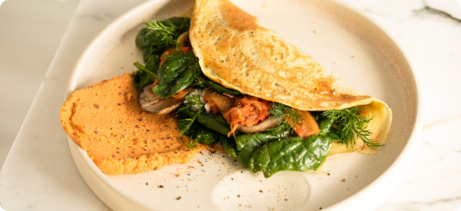

Basit Omlet Tarifi
Kolay ve hızlı bir yemek, her öğün için mükemmel. Bu klasik omlet, tercihinize göre peynir, sebze veya et ile doldurulabilecek, mükemmel şekilde pişirilmiş çırpılmış yumurtalardan oluşur.
Hazırlık süresi
- Toplam: Yaklaşık 10 dakika
- Hazırlık: 5 dakika
- Pişirme: 5 dakika
Malzemeler
- 2-3 büyük yumurta
- Tuz, damak zevkine göre
- Karabiber, damak zevkine göre
- 1 yemek kaşığı tereyağı veya yağ
- İsteğe bağlı iç malzemeler: peynir, doğranmış sebzeler, pişmiş etler, otlar
Talimatlar
- Yumurtaları çırpın: Bir kasede, yumurtaları bir tutam tuz ve karabiberle iyice karışana kadar çırpın. Daha kabarık bir doku için bir yemek kaşığı su veya süt ekleyebilirsiniz.
- Tavanızı ısıtın: Yapışmaz bir tavayı orta ateşte ısıtın ve içine tereyağı veya yağ ekleyin.
- Omleti pişirin: Tereyağı eriyip köpürmeye başladığında, yumurtaları tavaya dökün. Yumurtaların yüzeyi eşit şekilde kaplaması için tavayı eğin.
- İç malzemeleri ekleyin (isteğe bağlı): Yumurtalar kenarlardan sertleşmeye başladığında ancak ortada hala hafif akışkan olduğunda, seçtiğiniz iç malzemeleri omletin bir yarısına serpin.
- Kapatın ve servis yapın: Omlet pişmeye devam ederken, dikkatlice bir kenarını kaldırın ve iç malzemelerin üzerine kapatın. Bir dakika daha pişirmeye devam edin, ardından bir tabağa kaydırın.
- Afiyet olsun: Sıcak servis yapın, gerekiyorsa üzerine ekstra tuz ve karabiber ekleyin.
Besin Değeri
Aşağıdaki tablo, ek iç malzemeler olmadan bir porsiyon başına besin değerlerini göstermektedir.
| Kalori |
277kcal |
| Karbonhidrat |
0g |
| Protein |
20g |
| Yağ |
22g |